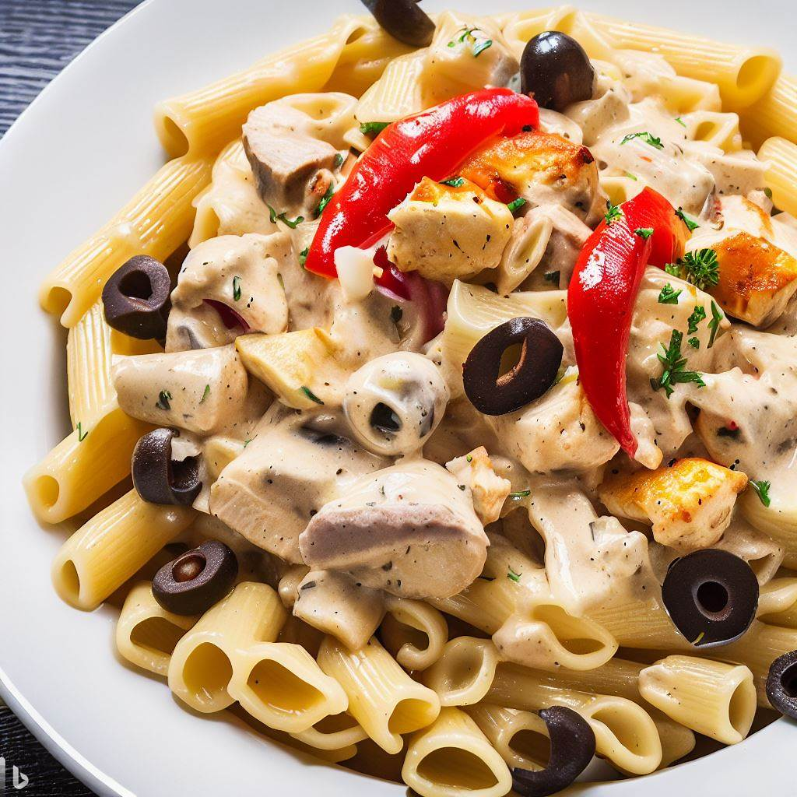

Grandma's Chicken Riggies

A classic upstate New York dish consisting of rigatoni pasta topped with chicken, mushrooms, onions, peppers, and olives
cooked in a creamy alfredo sauce infused with spice from pickled hot cherry peppers.
Ingredients
- 1 lb. rigatoni pasta
- 2 tsp. butter
- 1 lb. of baby portobello mushrooms, cut into chunks
- As needed olive oil
- 2 medium onions, quartered
- 2 red bell peppers, cut into chunks
- 1 green bell pepper, cut into chunks
- 4 (or more) garlic cloves, chopped fine or minced
- 2 jars store bought alfredo sauce
- 2 Tbsp. (or more) tomato paste
- To taste pickled hot cherry peppers in vinegar, seeds removed and sliced
- 2 lbs. chicken breasts cooked and chunked
- To taste black olives, sliced
- Parmesan cheese, grated
Method
- Cook the past 1 minute shorter than package instructions to ensure al dente consistency, reserve 1 cup pasta water, drain and set aside.
- Melt butter in a large saute pan and cook mushrooms till slightly under cooked, remove and set aside.
- In the same pan used for the mushrooms add olive oil if needed, cook onions and bell peppers until slightly under cooked, The onions should peel apart as they cook, when vegetables are almost done add in the garlic, remove and add to mushrooms.
- In the same pan combine alfredo sauce and tomato paste, heat slowly add extra tomato sauce to taste.
- Add hot peppers, vegetable mixture, chicken, and black olives to the sauce, cook till warmed through adding pasta water if needed.
- Serve over pasta topped with parmesan cheese.
Notes
- Feeds 6-8 people
- Barilla brand alfredo sauce is recommended
- Add pickled hot cherry peppers to taste depending on your spice tolerance